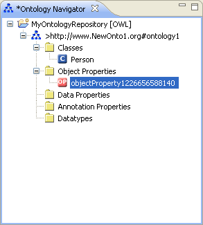

Create an Object Property
To create an object property, proceed as follows:
- Select an ontology.
- Select the Object Properties folder.
Right-click the Object Properties folder and select New Object Property.

- Rename the object property.
The object property will be created with an automatically generated name.
Rename the object property by changing its name in the Ontology Navigator.

- Press Return.
The object property will be renamed.

Note – Alternatively, you can rename the object property by changing its URI in the Entity Properties panel.
- Edit the object property.
The newly created object property will be displayed in the Entity Properties panel.
You can now continue to specify the characteristics of the object property.
For more information, see
OWL Object Properties.